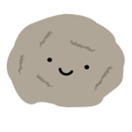

There are 25 questions in this test. 20 is a passing grade. 23 is an A.
You have one hour (60 minutes) to take the test. That gives you a little over
2 minutes for each question.
-
Which of these was Emperor of Japan?
- Wani
- Ōjin
- Achiki
- Baegje
-
Why is learning about Confucius, a Chinese magistrate, important in order to understand Japan?
- Confucius was a scholar who taught in Japan.
- He brought members of the Japanese empirial court to Osaka.
- His teachings affect the culture all around China.
- He started a religon in Korea that was taught in Japan.
-
Which Confucian virtue comes from a personal conviction that the right thing must be done?
- Wisdom
- Courtesy
- Justice
- Compasion
-
How do you write "STONE" in Japanese?
ISI

- リシ
- こつ
- いし
- リツ
-
Which relationship did Confucius claim would predict your ability to feel compassion for others?
- Parent-child
- Elder-senior
- Teacher-student
- Sovereign-subject
-
Which of these is the Korean scholar come as emissary to Japan?
- Wani
- Ōjin
- Achiki
- Baegje
-
How do you write "COW" in Japanese?
USI

- ウシ
- つン
- ワイ
- うつ
-
Which of these is consistent with Confucius' teachings?
- Better to be poor and happy, than to be sad and powerful.
- Better to be rich and happy, than to be sad and powerless.
- Better to be rich and happy, than to be sad and powerful.
- Better to be poor and happy, than to be sad and powerless.
-
Which Confucian virtue is based on personal knowledge and understanding of right behavior?
- Wisdom
- Courtesy
- Justice
- Compasion
-
How do you write "CHESNUT" in Japanese?
KURI

- くい
- うこ
- コこ
- クリ
-
Which of these is the Korean (maybe Chinese) scholar come to teach the Japanese prince?
- Wani
- Ōjin
- Achiki
- Baegje
-
How do you write "CARROTS" in Japanese?
NIN SIN
- にんしん
- いんつん
- こンシン
- いンツン
-
Which of these was brought by a legendary scholar from China to Japan?
- Osaka
- Horses
- Yellow Sea
- Kanji
-
How do you write "RAINBOW" in Japanese?
NISI
- につ
- ニシ
- いし
- こつ
-
Which of the Confucian virtues is derived from the dutiful teaching of a parent, teacher, or sovereign?
- Wisdom
- Courtesy
- Justice
- Compasion
-
How do you write "APPLE" in Japanese?
RIN KO
- りんに
- いンい
- りんこ
- シンニ
-
Which of these is the Korean kingdom that befriended Japan?
- Wani
- Ōjin
- Achiki
- Baegje
-
Which of these came to Japan as a gift from Korea?
- Osaka
- Horses
- Yellow Sea
- Kanji
-
How do you write "TRAFFIC LIGHT" in Japanese?
SIN KO U
- しんこう
- ツンクコ
- シンウク
- つんこく
-
Which Chinese Dynasty tried to surpress teachings of Confucius?
- Ming
- Qin
- Tao
- Han
-
Which of these separtes Japan from Korea?
- Osaka
- Horses
- Yellow Sea
- Kanji
-
Which Confucian virtue is derived from awareness of inter-personal relationships?
- Wisdom
- Courtesy
- Justice
- Compasion
-
How do you write "HORSE TAILS" in Japanese?
TUKUSI

- つくツ
- シウシ
- つうツ
- ツクシ
-
Which Chinese Dynasty made Confucius the standard for empirial service?
- Ming
- Qin
- Tao
- Han
-
Which was the seat of Empirial Japan?
- Osaka
- Horses
- Yellow Sea
- Kanji